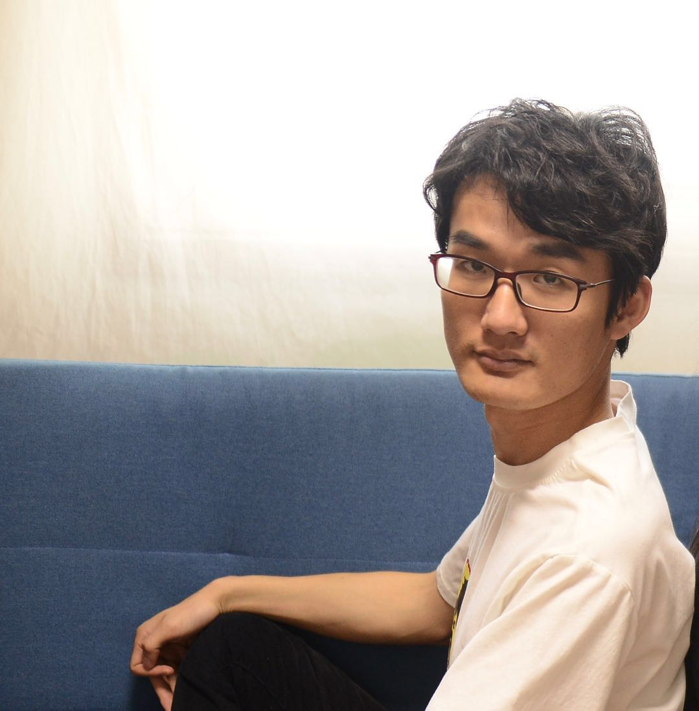

Zhisheng Zhong 钟之声Ph.D. Candidate
Department of Computer Science and Engineering
|
 |
Biography
I am currently a PhD student at Computer Science & Engineering Department, The Chinese University of Hong Kong (CUHK), under the supervision of Prof. Jiaya Jia. Before that, I obtained the Master degree in Intelligence Science, Peking University (PKU), supervised by Prof. Zhouchen Lin and Prof. Chao Zhang. I received the Bachelor degree in Communication Engineering from Beijing University of Posts and Telecommunications (BUPT).
My current research interests lie primarily in computer vision and machine learning, particularly focusing on:
Imbalanced Learning, and 2D/3D Segmentation.
News
Selected Publications [Google Scholar]
|
Understanding Imbalanced Semantic Segmentation Through Neural Collapse
Zhisheng Zhong, Jiequan Cui, Yibo Yang, Xiaoyang Wu, Xiaojuan Qi, Xiangyu Zhang, Jiaya Jia IEEE Conference on Computer Vision and Pattern Recognition (CVPR) 2023 [paper|code] |
|
|
Rebalanced Siamese Contrastive Mining for Long-Tailed Recognition
Zhisheng Zhong, Jiequan Cui, Eric Lo, Zeming Li, Jian Sun, Jiaya Jia arXiv:2203.11506 [paper|code] |
|
|
Improving Calibration for Long-Tailed Recognition
Zhisheng Zhong, Jiequan Cui, Shu Liu, Jiaya Jia IEEE Conference on Computer Vision and Pattern Recognition (CVPR) 2021 [paper|code] |
|
|
Channel-level Variable Quantization Network for Deep Image Compression
Zhisheng Zhong, Hiroaki Akutsu, Kiyoharu Aizawa International Joint Conferences on Artificial Intelligence (IJCAI), 2020 Ranked No.3 of the Workshop and Challenge on Learned Image Compression (CLIC) of CVPR, 2020 [paper|code|certificate] |
|
|
Deep Joint-semantics Reconstructing Hashing for Large-scale Unsupervised Cross-modal Retrieval
Shupeng Su*, Zhisheng Zhong*, Chao Zhang IEEE International Conference on Computer Vision (ICCV), 2019 (Oral) [paper|code] |
|
|
ADA-Tucker: Compressing Deep Neural Networks via Adaptive Dimension Adjustment Tucker Decomposition
Zhisheng Zhong*, Fangyin Wei, Zhouchen Lin, Chao Zhang Elsevier, Neural Networks (NN), 2019 [paper] |
|
|
Joint Sub-bands Learning with Clique Structures for Wavelet Domain Super-Resolution
Zhisheng Zhong*, Tiancheng Shen, Yibo Yang, Chao Zhang, Zhouchen Lin Neural Information Processing Systems (NeurIPS), 2018 [paper] |
|
|
ResLT: Residual Learning for Long-tailed Recognition
Jiequan Cui, Shu Liu, Zhuotao Tian, Zhisheng Zhong*, Jiaya Jia IEEE Transactions on Pattern Analysis and Machine Intelligence (TPAMI), 2022 [paper|code] |
|
|
Parametric Contrastive Learning
Jiequan Cui, Zhisheng Zhong, Shu Liu, Bei Yu, Jiaya Jia IEEE Conference on International Conference on Computer Vision (ICCV), 2021 [paper|code] |
|
|
Expectation Maximization Attention Networks for Semantic Segmentation
Xia Li, Zhisheng Zhong, Jianlong Wu, Yibo Yang, Zhouchen Lin, Hong Liu IEEE International Conference on Computer Vision (ICCV), 2019 (Oral) [paper|code] |
|
|
Differentiable Linearized ADMM
Xingyu Xie, Jianlong Wu, Zhisheng Zhong, Guangcan Liu, Zhouchen Lin International Conference on Machine Learning (ICML), 2019 [paper|code] |
|
|
Convolutional Neural Networks with Alternately Updated Clique
Yibo Yang, Zhisheng Zhong, Tiancheng Shen, Zhouchen Lin IEEE Conference on Computer Vision and Pattern Recognition (CVPR), 2018 (Oral) [paper|code] |
Experiences
|
Aug. 2021 - Now, Megvii Face++ Internship, Mentor: Dr. Xiangyu Zhang |
|
Aug. 2019 - May. 2020, The University of Tokyo Visiting, Supervisor: Prof. Kiyoharu Aizawa |
Honors and Awards
- Postgraduate Scholarship, CUHK, 2021-2025
- 3rd Place, 3rd Workshop and Challenge on Learned Image Compression (CLIC) of CVPR, 2020
- Excellent Graduate, Beijing, 2016 and 2019
- Baosteel Scholarship, China, 2019
- Qualcomm Scholarship, China, 2019
- National Encouragement Scholarship, Beijing, 2014 and 2015
Professional Services
IEEE Conference on Computer Vision and Pattern Recognition (CVPR’20-22)
IEEE International Conference on Computer Vision (ICCV’19,21)
European Conference on Computer Vision (ECCV’22)
International Conference on Learning Representations (ICLR'21-22)
Neural Information Processing Systems (NeurIPS'20-22)
IEEE Transactions on Pattern Analysis and Machine Intelligence (TPAMI)
IEEE Transactions on Neural Networks and Learning Systems (TNNLS)
IEEE Transactions on Circuits and Systems for Video Technology (TCSVT)
Teaching
| 2022-2023 | Spring | ENGG5104 Image Processing and Computer Vision |
| 2022-2023 | Fall | ENGG1110 Problem Solving By Programming |
| 2021-2022 | Spring | CENG3420 Computer Organization & Design |
| 2021-2022 | Fall | ENGG1110 Problem Solving By Programming |

© Zhisheng Zhong | Last updated: Nov. 2022